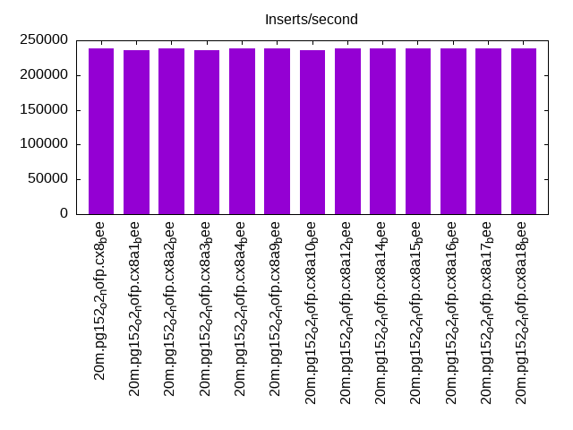
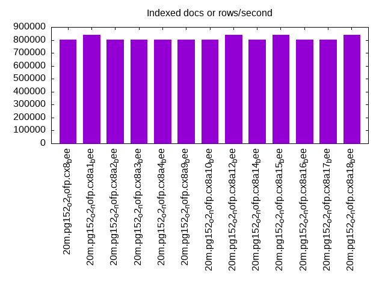
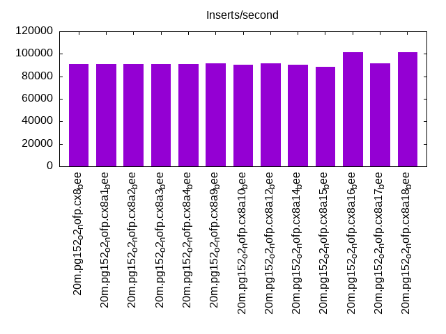
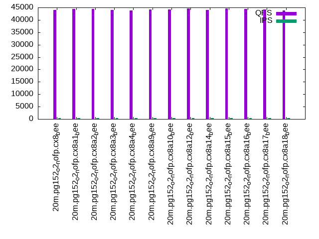
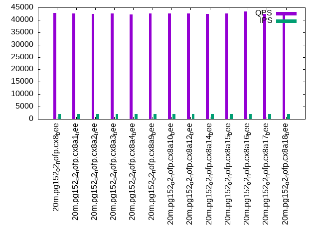
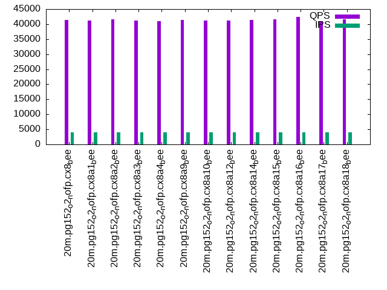

This is a report for the insert benchmark with 20M docs and 4 client(s). It is generated by scripts (bash, awk, sed) and Tufte might not be impressed. An overview of the insert benchmark is here and a short update is here. Below, by DBMS, I mean DBMS+version.config. An example is my8020.c10b40 where my means MySQL, 8020 is version 8.0.20 and c10b40 is the name for the configuration file.
The test server has 8 AMD cores, 16G RAM and an NVMe SSD. It is described here as the Beelink. The benchmark was run with 4 clients and there were 1 or 3 connections per client (1 for queries or inserts without rate limits, 1+1 for rate limited inserts+deletes). It uses 4 tables, one per client. It loads 20M rows per table without secondary indexes, creates secondary indexes, then inserts 50M rows per table with a delete per insert to avoid growing the table. It then does 3 read+write tests for 1800s each that do queries as fast as possible with 100, 500 and then 1000 inserts/second/client concurrent with the queries and 1000 deletes/second to avoid growing the table. The database is cached by Postgres. Clients and the DBMS share one server. The per-database configs are in the per-database subdirectories here.
The tested DBMS are:
The numbers are inserts/s for l.i0 and l.i1, indexed docs (or rows) /s for l.x and queries/s for q*.2. The values are the average rate over the entire test for inserts (IPS) and queries (QPS). The range of values for IPS and QPS is split into 3 parts: bottom 25%, middle 50%, top 25%. Values in the bottom 25% have a red background, values in the top 25% have a green background and values in the middle have no color. A gray background is used for values that can be ignored because the DBMS did not sustain the target insert rate. Red backgrounds are not used when the minimum value is within 80% of the max value.
| dbms | l.i0 | l.x | l.i1 | q100.1 | q500.1 | q1000.1 |
|---|---|---|---|---|---|---|
| 20m.pg152_o2_nofp.cx8_bee | 238095 | 804000 | 91012 | 44054 | 42814 | 41304 |
| 20m.pg152_o2_nofp.cx8a1_bee | 235294 | 837500 | 90971 | 44315 | 42512 | 41208 |
| 20m.pg152_o2_nofp.cx8a2_bee | 238095 | 804000 | 90744 | 44471 | 42470 | 41594 |
| 20m.pg152_o2_nofp.cx8a3_bee | 235294 | 804000 | 90662 | 43944 | 42608 | 41207 |
| 20m.pg152_o2_nofp.cx8a4_bee | 238095 | 804000 | 91116 | 43783 | 42254 | 40883 |
| 20m.pg152_o2_nofp.cx8a9_bee | 238095 | 804000 | 91303 | 44293 | 42555 | 41307 |
| 20m.pg152_o2_nofp.cx8a10_bee | 235294 | 804000 | 90539 | 44124 | 42593 | 41118 |
| 20m.pg152_o2_nofp.cx8a12_bee | 238095 | 837500 | 91408 | 44589 | 42680 | 41191 |
| 20m.pg152_o2_nofp.cx8a14_bee | 238095 | 804000 | 90600 | 44045 | 42481 | 41374 |
| 20m.pg152_o2_nofp.cx8a15_bee | 238095 | 837500 | 88613 | 44576 | 42505 | 41608 |
| 20m.pg152_o2_nofp.cx8a16_bee | 238095 | 804000 | 101343 | 44347 | 43347 | 42374 |
| 20m.pg152_o2_nofp.cx8a17_bee | 238095 | 804000 | 91303 | 44241 | 42438 | 41026 |
| 20m.pg152_o2_nofp.cx8a18_bee | 238095 | 837500 | 101471 | 43833 | 42915 | 41598 |
This table has relative throughput, throughput for the DBMS relative to the DBMS in the first line, using the absolute throughput from the previous table.
| dbms | l.i0 | l.x | l.i1 | q100.1 | q500.1 | q1000.1 |
|---|---|---|---|---|---|---|
| 20m.pg152_o2_nofp.cx8_bee | 1.00 | 1.00 | 1.00 | 1.00 | 1.00 | 1.00 |
| 20m.pg152_o2_nofp.cx8a1_bee | 0.99 | 1.04 | 1.00 | 1.01 | 0.99 | 1.00 |
| 20m.pg152_o2_nofp.cx8a2_bee | 1.00 | 1.00 | 1.00 | 1.01 | 0.99 | 1.01 |
| 20m.pg152_o2_nofp.cx8a3_bee | 0.99 | 1.00 | 1.00 | 1.00 | 1.00 | 1.00 |
| 20m.pg152_o2_nofp.cx8a4_bee | 1.00 | 1.00 | 1.00 | 0.99 | 0.99 | 0.99 |
| 20m.pg152_o2_nofp.cx8a9_bee | 1.00 | 1.00 | 1.00 | 1.01 | 0.99 | 1.00 |
| 20m.pg152_o2_nofp.cx8a10_bee | 0.99 | 1.00 | 0.99 | 1.00 | 0.99 | 1.00 |
| 20m.pg152_o2_nofp.cx8a12_bee | 1.00 | 1.04 | 1.00 | 1.01 | 1.00 | 1.00 |
| 20m.pg152_o2_nofp.cx8a14_bee | 1.00 | 1.00 | 1.00 | 1.00 | 0.99 | 1.00 |
| 20m.pg152_o2_nofp.cx8a15_bee | 1.00 | 1.04 | 0.97 | 1.01 | 0.99 | 1.01 |
| 20m.pg152_o2_nofp.cx8a16_bee | 1.00 | 1.00 | 1.11 | 1.01 | 1.01 | 1.03 |
| 20m.pg152_o2_nofp.cx8a17_bee | 1.00 | 1.00 | 1.00 | 1.00 | 0.99 | 0.99 |
| 20m.pg152_o2_nofp.cx8a18_bee | 1.00 | 1.04 | 1.11 | 0.99 | 1.00 | 1.01 |
This lists the average rate of inserts/s for the tests that do inserts concurrent with queries. For such tests the query rate is listed in the table above. The read+write tests are setup so that the insert rate should match the target rate every second. Cells that are not at least 95% of the target have a red background to indicate a failure to satisfy the target.
| dbms | q100.1 | q500.1 | q1000.1 |
|---|---|---|---|
| pg152_o2_nofp.cx8_bee | 399 | 1994 | 3989 |
| pg152_o2_nofp.cx8a1_bee | 399 | 1993 | 3989 |
| pg152_o2_nofp.cx8a2_bee | 399 | 1993 | 3987 |
| pg152_o2_nofp.cx8a3_bee | 399 | 1993 | 3989 |
| pg152_o2_nofp.cx8a4_bee | 399 | 1994 | 3989 |
| pg152_o2_nofp.cx8a9_bee | 399 | 1994 | 3989 |
| pg152_o2_nofp.cx8a10_bee | 399 | 1994 | 3989 |
| pg152_o2_nofp.cx8a12_bee | 399 | 1993 | 3989 |
| pg152_o2_nofp.cx8a14_bee | 399 | 1994 | 3987 |
| pg152_o2_nofp.cx8a15_bee | 399 | 1993 | 3989 |
| pg152_o2_nofp.cx8a16_bee | 399 | 1994 | 3989 |
| pg152_o2_nofp.cx8a17_bee | 399 | 1994 | 3989 |
| pg152_o2_nofp.cx8a18_bee | 399 | 1994 | 3989 |
| target | 400 | 2000 | 4000 |
l.i0: load without secondary indexes. Graphs for performance per 1-second interval are here.
Average throughput:
Insert response time histogram: each cell has the percentage of responses that take <= the time in the header and max is the max response time in seconds. For the max column values in the top 25% of the range have a red background and in the bottom 25% of the range have a green background. The red background is not used when the min value is within 80% of the max value.
| dbms | 256us | 1ms | 4ms | 16ms | 64ms | 256ms | 1s | 4s | 16s | gt | max |
|---|---|---|---|---|---|---|---|---|---|---|---|
| pg152_o2_nofp.cx8_bee | 99.949 | 0.051 | 0.016 | ||||||||
| pg152_o2_nofp.cx8a1_bee | 99.945 | 0.055 | 0.012 | ||||||||
| pg152_o2_nofp.cx8a2_bee | 99.957 | 0.043 | 0.011 | ||||||||
| pg152_o2_nofp.cx8a3_bee | 99.944 | 0.056 | 0.001 | 0.017 | |||||||
| pg152_o2_nofp.cx8a4_bee | 99.951 | 0.049 | 0.015 | ||||||||
| pg152_o2_nofp.cx8a9_bee | 99.945 | 0.054 | 0.001 | 0.020 | |||||||
| pg152_o2_nofp.cx8a10_bee | 99.939 | 0.060 | 0.001 | 0.018 | |||||||
| pg152_o2_nofp.cx8a12_bee | 99.955 | 0.045 | 0.011 | ||||||||
| pg152_o2_nofp.cx8a14_bee | 99.950 | 0.051 | 0.012 | ||||||||
| pg152_o2_nofp.cx8a15_bee | 99.939 | 0.060 | 0.001 | 0.022 | |||||||
| pg152_o2_nofp.cx8a16_bee | 99.946 | 0.054 | 0.011 | ||||||||
| pg152_o2_nofp.cx8a17_bee | 99.945 | 0.055 | 0.001 | 0.022 | |||||||
| pg152_o2_nofp.cx8a18_bee | 99.945 | 0.055 | 0.001 | 0.017 |
Performance metrics for the DBMS listed above. Some are normalized by throughput, others are not. Legend for results is here.
ips qps rps rmbps wps wmbps rpq rkbpq wpi wkbpi csps cpups cspq cpupq dbgb1 dbgb2 rss maxop p50 p99 tag 238095 0 0 0.0 280.3 102.6 0.000 0.000 0.001 0.441 23627 71.8 0.099 24 1.9 5.2 0.0 0.016 70224 44851 20m.pg152_o2_nofp.cx8_bee 235294 0 0 0.0 283.5 103.3 0.000 0.000 0.001 0.450 23675 72.2 0.101 25 1.9 5.2 1.9 0.012 70723 21976 20m.pg152_o2_nofp.cx8a1_bee 238095 0 0 0.0 281.8 102.6 0.000 0.000 0.001 0.441 23637 72.2 0.099 24 1.9 5.2 0.0 0.011 69625 1999 20m.pg152_o2_nofp.cx8a2_bee 235294 0 0 0.0 272.7 99.0 0.000 0.000 0.001 0.431 23104 70.7 0.098 24 1.9 5.2 0.0 0.017 70124 45051 20m.pg152_o2_nofp.cx8a3_bee 238095 0 0 0.0 283.0 102.6 0.000 0.000 0.001 0.441 23518 72.1 0.099 24 1.9 5.2 0.0 0.015 70423 21177 20m.pg152_o2_nofp.cx8a4_bee 238095 0 0 0.0 280.2 102.3 0.000 0.000 0.001 0.440 23345 72.1 0.098 24 1.9 5.2 0.0 0.020 70224 35874 20m.pg152_o2_nofp.cx8a9_bee 235294 0 0 0.0 271.5 98.8 0.000 0.000 0.001 0.430 23379 70.8 0.099 24 1.9 5.2 0.0 0.018 70220 59036 20m.pg152_o2_nofp.cx8a10_bee 238095 0 0 0.0 281.3 102.3 0.000 0.000 0.001 0.440 23517 72.1 0.099 24 1.9 5.2 0.0 0.011 70024 60955 20m.pg152_o2_nofp.cx8a12_bee 238095 0 0 0.0 282.3 102.7 0.000 0.000 0.001 0.442 23766 72.1 0.100 24 1.9 5.2 0.0 0.012 69724 57659 20m.pg152_o2_nofp.cx8a14_bee 238095 0 0 0.0 283.0 102.7 0.000 0.000 0.001 0.442 23579 72.1 0.099 24 1.9 5.2 0.0 0.022 69924 61832 20m.pg152_o2_nofp.cx8a15_bee 238095 0 0 0.0 279.3 102.6 0.000 0.000 0.001 0.441 23661 72.5 0.099 24 1.9 5.2 0.0 0.011 70308 31078 20m.pg152_o2_nofp.cx8a16_bee 238095 0 0 0.0 283.1 102.8 0.000 0.000 0.001 0.442 23613 71.9 0.099 24 1.9 5.2 0.0 0.022 70749 16788 20m.pg152_o2_nofp.cx8a17_bee 238095 0 0 0.0 281.1 102.9 0.000 0.000 0.001 0.442 23228 72.1 0.098 24 1.9 5.2 0.0 0.017 70448 15988 20m.pg152_o2_nofp.cx8a18_bee
l.x: create secondary indexes.
Average throughput:
Performance metrics for the DBMS listed above. Some are normalized by throughput, others are not. Legend for results is here.
ips qps rps rmbps wps wmbps rpq rkbpq wpi wkbpi csps cpups cspq cpupq dbgb1 dbgb2 rss maxop p50 p99 tag 804000 0 0 0.0 461.6 214.3 0.000 0.000 0.001 0.273 2831 37.8 0.004 4 3.7 8.6 0.0 0.003 NA NA 20m.pg152_o2_nofp.cx8_bee 837500 0 0 0.0 349.7 161.2 0.000 0.000 0.000 0.197 2399 38.2 0.003 4 3.7 8.0 0.0 0.004 NA NA 20m.pg152_o2_nofp.cx8a1_bee 804000 0 0 0.0 462.3 214.0 0.000 0.000 0.001 0.273 2471 37.2 0.003 4 3.7 8.6 0.0 0.004 NA NA 20m.pg152_o2_nofp.cx8a2_bee 804000 0 0 0.0 462.2 214.1 0.000 0.000 0.001 0.273 2260 36.8 0.003 4 3.7 8.6 0.0 0.004 NA NA 20m.pg152_o2_nofp.cx8a3_bee 804000 0 0 0.0 464.4 214.2 0.000 0.000 0.001 0.273 2522 37.5 0.003 4 3.7 8.6 0.0 0.004 NA NA 20m.pg152_o2_nofp.cx8a4_bee 804000 0 0 0.0 464.2 214.3 0.000 0.000 0.001 0.273 2542 37.5 0.003 4 3.7 8.6 0.0 0.004 NA NA 20m.pg152_o2_nofp.cx8a9_bee 804000 0 0 0.0 464.7 214.7 0.000 0.000 0.001 0.273 2482 37.0 0.003 4 3.7 8.6 0.0 0.004 NA NA 20m.pg152_o2_nofp.cx8a10_bee 837500 0 0 0.0 362.6 167.5 0.000 0.000 0.000 0.205 2023 40.0 0.002 4 3.7 8.6 0.0 0.004 NA NA 20m.pg152_o2_nofp.cx8a12_bee 804000 0 0 0.0 463.4 214.0 0.000 0.000 0.001 0.273 2082 37.3 0.003 4 3.7 8.6 0.0 0.004 NA NA 20m.pg152_o2_nofp.cx8a14_bee 837500 0 0 0.0 463.4 213.9 0.000 0.000 0.001 0.262 2111 37.3 0.003 4 3.7 8.6 0.0 0.004 NA NA 20m.pg152_o2_nofp.cx8a15_bee 804000 0 0 0.0 464.0 214.3 0.000 0.000 0.001 0.273 2110 37.8 0.003 4 3.7 8.6 0.0 0.003 NA NA 20m.pg152_o2_nofp.cx8a16_bee 804000 0 0 0.0 462.7 213.8 0.000 0.000 0.001 0.272 2319 37.5 0.003 4 3.7 8.6 0.0 0.004 NA NA 20m.pg152_o2_nofp.cx8a17_bee 837500 0 0 0.0 268.6 121.9 0.000 0.000 0.000 0.149 1480 41.0 0.002 4 3.7 8.0 0.0 0.003 NA NA 20m.pg152_o2_nofp.cx8a18_bee
l.i1: continue load after secondary indexes created. Graphs for performance per 1-second interval are here.
Average throughput:
Insert response time histogram: each cell has the percentage of responses that take <= the time in the header and max is the max response time in seconds. For the max column values in the top 25% of the range have a red background and in the bottom 25% of the range have a green background. The red background is not used when the min value is within 80% of the max value.
| dbms | 256us | 1ms | 4ms | 16ms | 64ms | 256ms | 1s | 4s | 16s | gt | max |
|---|---|---|---|---|---|---|---|---|---|---|---|
| pg152_o2_nofp.cx8_bee | 99.508 | 0.487 | 0.005 | 0.059 | |||||||
| pg152_o2_nofp.cx8a1_bee | 99.456 | 0.542 | 0.001 | 0.029 | |||||||
| pg152_o2_nofp.cx8a2_bee | 99.488 | 0.507 | 0.005 | 0.052 | |||||||
| pg152_o2_nofp.cx8a3_bee | 99.564 | 0.435 | 0.001 | 0.050 | |||||||
| pg152_o2_nofp.cx8a4_bee | 99.494 | 0.499 | 0.007 | 0.048 | |||||||
| pg152_o2_nofp.cx8a9_bee | 99.487 | 0.509 | 0.004 | 0.056 | |||||||
| pg152_o2_nofp.cx8a10_bee | 99.503 | 0.493 | 0.004 | 0.055 | |||||||
| pg152_o2_nofp.cx8a12_bee | 99.472 | 0.525 | 0.003 | nonzero | 0.168 | ||||||
| pg152_o2_nofp.cx8a14_bee | 99.483 | 0.510 | 0.006 | nonzero | 0.100 | ||||||
| pg152_o2_nofp.cx8a15_bee | 99.074 | 0.871 | 0.055 | nonzero | 0.073 | ||||||
| pg152_o2_nofp.cx8a16_bee | 99.596 | 0.394 | 0.010 | 0.049 | |||||||
| pg152_o2_nofp.cx8a17_bee | 99.476 | 0.519 | 0.006 | nonzero | 0.090 | ||||||
| pg152_o2_nofp.cx8a18_bee | 99.631 | 0.367 | 0.002 | nonzero | 0.201 |
Delete response time histogram: each cell has the percentage of responses that take <= the time in the header and max is the max response time in seconds. For the max column values in the top 25% of the range have a red background and in the bottom 25% of the range have a green background. The red background is not used when the min value is within 80% of the max value.
| dbms | 256us | 1ms | 4ms | 16ms | 64ms | 256ms | 1s | 4s | 16s | gt | max |
|---|---|---|---|---|---|---|---|---|---|---|---|
| pg152_o2_nofp.cx8_bee | 3.468 | 88.035 | 4.303 | 4.185 | 0.009 | nonzero | 0.090 | ||||
| pg152_o2_nofp.cx8a1_bee | 3.360 | 87.793 | 4.559 | 4.273 | 0.014 | 0.034 | |||||
| pg152_o2_nofp.cx8a2_bee | 3.594 | 87.696 | 4.281 | 4.416 | 0.012 | 0.049 | |||||
| pg152_o2_nofp.cx8a3_bee | 3.341 | 88.250 | 4.296 | 4.107 | 0.005 | 0.048 | |||||
| pg152_o2_nofp.cx8a4_bee | 3.281 | 88.159 | 4.327 | 4.221 | 0.011 | 0.044 | |||||
| pg152_o2_nofp.cx8a9_bee | 3.630 | 87.735 | 4.425 | 4.201 | 0.009 | nonzero | 0.066 | ||||
| pg152_o2_nofp.cx8a10_bee | 3.226 | 88.261 | 4.431 | 4.075 | 0.007 | nonzero | 0.064 | ||||
| pg152_o2_nofp.cx8a12_bee | 3.601 | 87.701 | 4.425 | 4.261 | 0.012 | nonzero | 0.240 | ||||
| pg152_o2_nofp.cx8a14_bee | 3.457 | 87.928 | 4.421 | 4.183 | 0.011 | 0.045 | |||||
| pg152_o2_nofp.cx8a15_bee | 4.802 | 86.211 | 4.637 | 4.311 | 0.039 | nonzero | 0.071 | ||||
| pg152_o2_nofp.cx8a16_bee | 4.119 | 87.351 | 7.735 | 0.789 | 0.006 | nonzero | 0.074 | ||||
| pg152_o2_nofp.cx8a17_bee | 3.557 | 87.903 | 4.368 | 4.160 | 0.012 | 0.048 | |||||
| pg152_o2_nofp.cx8a18_bee | 3.548 | 87.889 | 7.812 | 0.750 | 0.001 | nonzero | 0.198 |
Performance metrics for the DBMS listed above. Some are normalized by throughput, others are not. Legend for results is here.
ips qps rps rmbps wps wmbps rpq rkbpq wpi wkbpi csps cpups cspq cpupq dbgb1 dbgb2 rss maxop p50 p99 tag 91012 0 0 0.0 262.3 71.0 0.000 0.000 0.003 0.799 34610 75.9 0.380 67 6.1 46.1 0.0 0.059 26817 4145 20m.pg152_o2_nofp.cx8_bee 90971 0 0 0.0 246.1 66.4 0.000 0.000 0.003 0.747 34551 77.0 0.380 68 6.1 46.1 0.0 0.029 26921 4047 20m.pg152_o2_nofp.cx8a1_bee 90744 0 0 0.0 261.9 71.0 0.000 0.000 0.003 0.801 34577 76.7 0.381 68 6.1 46.1 0.0 0.052 26920 4046 20m.pg152_o2_nofp.cx8a2_bee 90662 0 0 0.0 221.6 60.3 0.000 0.000 0.002 0.681 34571 75.4 0.381 67 6.1 46.1 0.0 0.050 26771 4096 20m.pg152_o2_nofp.cx8a3_bee 91116 0 0 0.0 262.0 71.1 0.000 0.000 0.003 0.799 34702 76.2 0.381 67 6.1 46.1 0.4 0.048 26921 4096 20m.pg152_o2_nofp.cx8a4_bee 91303 0 0 0.0 263.0 71.3 0.000 0.000 0.003 0.800 34746 76.4 0.381 67 6.1 46.1 1.6 0.056 26871 4097 20m.pg152_o2_nofp.cx8a9_bee 90539 0 0 0.0 261.5 70.7 0.000 0.000 0.003 0.799 34490 75.6 0.381 67 6.1 46.1 0.0 0.055 26582 4195 20m.pg152_o2_nofp.cx8a10_bee 91408 0 0 0.0 264.0 71.5 0.000 0.000 0.003 0.801 34729 77.2 0.380 68 6.1 46.1 0.0 0.168 27070 4096 20m.pg152_o2_nofp.cx8a12_bee 90600 0 0 0.0 261.4 70.7 0.000 0.000 0.003 0.799 34442 76.0 0.380 67 6.0 46.1 0.0 0.100 26783 4177 20m.pg152_o2_nofp.cx8a14_bee 88613 0 0 0.0 626.4 153.2 0.000 0.000 0.007 1.770 33149 76.1 0.374 69 6.1 16.1 0.0 0.073 26171 4046 20m.pg152_o2_nofp.cx8a15_bee 101343 0 0 0.0 287.7 78.6 0.000 0.000 0.003 0.794 38220 79.3 0.377 63 5.7 45.7 0.0 0.049 26871 10688 20m.pg152_o2_nofp.cx8a16_bee 91303 0 0 0.0 263.8 71.5 0.000 0.000 0.003 0.802 34641 76.4 0.379 67 6.1 46.1 0.0 0.090 27020 4096 20m.pg152_o2_nofp.cx8a17_bee 101471 0 0 0.0 270.4 73.5 0.000 0.000 0.003 0.741 38284 79.4 0.377 63 5.7 45.7 0.0 0.201 26871 11042 20m.pg152_o2_nofp.cx8a18_bee
q100.1: range queries with 100 insert/s per client. Graphs for performance per 1-second interval are here.
Average throughput:
Query response time histogram: each cell has the percentage of responses that take <= the time in the header and max is the max response time in seconds. For max values in the top 25% of the range have a red background and in the bottom 25% of the range have a green background. The red background is not used when the min value is within 80% of the max value.
| dbms | 256us | 1ms | 4ms | 16ms | 64ms | 256ms | 1s | 4s | 16s | gt | max |
|---|---|---|---|---|---|---|---|---|---|---|---|
| pg152_o2_nofp.cx8_bee | 99.984 | 0.011 | 0.005 | nonzero | 0.008 | ||||||
| pg152_o2_nofp.cx8a1_bee | 99.983 | 0.012 | 0.005 | nonzero | 0.013 | ||||||
| pg152_o2_nofp.cx8a2_bee | 99.984 | 0.011 | 0.005 | nonzero | 0.006 | ||||||
| pg152_o2_nofp.cx8a3_bee | 99.988 | 0.008 | 0.004 | nonzero | 0.005 | ||||||
| pg152_o2_nofp.cx8a4_bee | 99.985 | 0.011 | 0.005 | nonzero | 0.008 | ||||||
| pg152_o2_nofp.cx8a9_bee | 99.973 | 0.019 | 0.007 | nonzero | 0.008 | ||||||
| pg152_o2_nofp.cx8a10_bee | 99.984 | 0.011 | 0.005 | nonzero | 0.007 | ||||||
| pg152_o2_nofp.cx8a12_bee | 99.985 | 0.010 | 0.005 | nonzero | 0.006 | ||||||
| pg152_o2_nofp.cx8a14_bee | 99.984 | 0.011 | 0.005 | nonzero | 0.010 | ||||||
| pg152_o2_nofp.cx8a15_bee | 99.989 | 0.006 | 0.004 | nonzero | 0.011 | ||||||
| pg152_o2_nofp.cx8a16_bee | 99.985 | 0.010 | 0.005 | nonzero | 0.009 | ||||||
| pg152_o2_nofp.cx8a17_bee | 99.985 | 0.010 | 0.005 | nonzero | 0.012 | ||||||
| pg152_o2_nofp.cx8a18_bee | 99.984 | 0.011 | 0.005 | nonzero | 0.015 |
Insert response time histogram: each cell has the percentage of responses that take <= the time in the header and max is the max response time in seconds. For max values in the top 25% of the range have a red background and in the bottom 25% of the range have a green background. The red background is not used when the min value is within 80% of the max value.
| dbms | 256us | 1ms | 4ms | 16ms | 64ms | 256ms | 1s | 4s | 16s | gt | max |
|---|---|---|---|---|---|---|---|---|---|---|---|
| pg152_o2_nofp.cx8_bee | 99.917 | 0.083 | 0.008 | ||||||||
| pg152_o2_nofp.cx8a1_bee | 99.625 | 0.375 | 0.007 | ||||||||
| pg152_o2_nofp.cx8a2_bee | 99.847 | 0.153 | 0.007 | ||||||||
| pg152_o2_nofp.cx8a3_bee | 99.951 | 0.049 | 0.007 | ||||||||
| pg152_o2_nofp.cx8a4_bee | 99.917 | 0.083 | 0.009 | ||||||||
| pg152_o2_nofp.cx8a9_bee | 99.896 | 0.104 | 0.009 | ||||||||
| pg152_o2_nofp.cx8a10_bee | 99.778 | 0.222 | 0.007 | ||||||||
| pg152_o2_nofp.cx8a12_bee | 99.868 | 0.132 | 0.008 | ||||||||
| pg152_o2_nofp.cx8a14_bee | 99.889 | 0.111 | 0.006 | ||||||||
| pg152_o2_nofp.cx8a15_bee | 99.875 | 0.125 | 0.007 | ||||||||
| pg152_o2_nofp.cx8a16_bee | 99.931 | 0.069 | 0.006 | ||||||||
| pg152_o2_nofp.cx8a17_bee | 99.951 | 0.049 | 0.006 | ||||||||
| pg152_o2_nofp.cx8a18_bee | 99.674 | 0.326 | 0.007 |
Delete response time histogram: each cell has the percentage of responses that take <= the time in the header and max is the max response time in seconds. For max values in the top 25% of the range have a red background and in the bottom 25% of the range have a green background. The red background is not used when the min value is within 80% of the max value.
| dbms | 256us | 1ms | 4ms | 16ms | 64ms | 256ms | 1s | 4s | 16s | gt | max |
|---|---|---|---|---|---|---|---|---|---|---|---|
| pg152_o2_nofp.cx8_bee | 15.549 | 69.431 | 15.014 | 0.007 | 0.005 | ||||||
| pg152_o2_nofp.cx8a1_bee | 11.653 | 76.514 | 11.660 | 0.174 | 0.006 | ||||||
| pg152_o2_nofp.cx8a2_bee | 15.486 | 73.222 | 11.208 | 0.083 | 0.006 | ||||||
| pg152_o2_nofp.cx8a3_bee | 14.278 | 70.465 | 15.250 | 0.007 | 0.005 | ||||||
| pg152_o2_nofp.cx8a4_bee | 13.431 | 71.500 | 15.035 | 0.035 | 0.006 | ||||||
| pg152_o2_nofp.cx8a9_bee | 20.757 | 70.736 | 8.486 | 0.021 | 0.007 | ||||||
| pg152_o2_nofp.cx8a10_bee | 16.625 | 66.910 | 16.375 | 0.090 | 0.007 | ||||||
| pg152_o2_nofp.cx8a12_bee | 15.319 | 68.854 | 15.674 | 0.153 | 0.008 | ||||||
| pg152_o2_nofp.cx8a14_bee | 14.826 | 65.076 | 20.042 | 0.056 | 0.005 | ||||||
| pg152_o2_nofp.cx8a15_bee | 18.924 | 68.646 | 12.396 | 0.035 | 0.008 | ||||||
| pg152_o2_nofp.cx8a16_bee | 17.181 | 67.653 | 15.062 | 0.104 | 0.006 | ||||||
| pg152_o2_nofp.cx8a17_bee | 17.382 | 73.986 | 8.611 | 0.021 | 0.006 | ||||||
| pg152_o2_nofp.cx8a18_bee | 13.493 | 63.521 | 22.792 | 0.194 | 0.007 |
Performance metrics for the DBMS listed above. Some are normalized by throughput, others are not. Legend for results is here.
ips qps rps rmbps wps wmbps rpq rkbpq wpi wkbpi csps cpups cspq cpupq dbgb1 dbgb2 rss maxop p50 p99 tag 399 44054 0 0.0 22.7 3.7 0.000 0.000 0.057 9.416 168015 50.2 3.814 91 6.1 46.1 0.0 0.008 11236 9493 20m.pg152_o2_nofp.cx8_bee 399 44315 0 0.0 19.2 2.8 0.000 0.000 0.048 7.090 169002 50.3 3.814 91 6.0 46.1 0.0 0.013 11256 9270 20m.pg152_o2_nofp.cx8a1_bee 399 44471 0 0.0 22.4 3.4 0.000 0.000 0.056 8.768 169605 50.3 3.814 90 6.1 46.1 0.0 0.006 11379 9513 20m.pg152_o2_nofp.cx8a2_bee 399 43944 0 0.0 18.0 2.3 0.000 0.000 0.045 5.885 167697 50.2 3.816 91 6.1 46.1 0.0 0.005 11188 9318 20m.pg152_o2_nofp.cx8a3_bee 399 43783 0 0.0 22.9 3.5 0.000 0.000 0.057 8.970 166998 50.2 3.814 92 6.1 46.1 0.0 0.008 11112 9529 20m.pg152_o2_nofp.cx8a4_bee 399 44293 0 0.0 90.5 6.5 0.000 0.000 0.227 16.787 168983 50.3 3.815 91 6.1 46.1 0.0 0.008 11284 9110 20m.pg152_o2_nofp.cx8a9_bee 399 44124 0 0.0 21.8 3.4 0.000 0.000 0.055 8.762 168257 50.3 3.813 91 6.1 46.1 0.0 0.007 11224 9350 20m.pg152_o2_nofp.cx8a10_bee 399 44589 0 0.0 22.2 3.5 0.000 0.000 0.056 9.027 170064 50.4 3.814 90 6.1 46.1 0.0 0.006 11252 9673 20m.pg152_o2_nofp.cx8a12_bee 399 44045 0 0.0 24.0 4.0 0.000 0.000 0.060 10.157 167994 50.4 3.814 92 6.0 46.1 0.0 0.010 11124 9238 20m.pg152_o2_nofp.cx8a14_bee 399 44576 0 0.0 10.7 1.1 0.000 0.000 0.027 2.812 170042 50.2 3.815 90 6.1 16.1 0.0 0.011 11236 9637 20m.pg152_o2_nofp.cx8a15_bee 399 44347 0 0.0 20.0 3.0 0.000 0.000 0.050 7.613 169113 50.2 3.813 91 5.7 45.7 0.0 0.009 11284 9286 20m.pg152_o2_nofp.cx8a16_bee 399 44241 0 0.0 21.5 3.3 0.000 0.000 0.054 8.510 168754 50.3 3.814 91 6.0 46.1 0.0 0.012 11140 9158 20m.pg152_o2_nofp.cx8a17_bee 399 43833 0 0.0 17.7 2.4 0.000 0.000 0.044 6.126 167082 50.3 3.812 92 5.7 45.7 0.0 0.015 11117 8934 20m.pg152_o2_nofp.cx8a18_bee
q500.1: range queries with 500 insert/s per client. Graphs for performance per 1-second interval are here.
Average throughput:
Query response time histogram: each cell has the percentage of responses that take <= the time in the header and max is the max response time in seconds. For max values in the top 25% of the range have a red background and in the bottom 25% of the range have a green background. The red background is not used when the min value is within 80% of the max value.
| dbms | 256us | 1ms | 4ms | 16ms | 64ms | 256ms | 1s | 4s | 16s | gt | max |
|---|---|---|---|---|---|---|---|---|---|---|---|
| pg152_o2_nofp.cx8_bee | 99.946 | 0.033 | 0.019 | 0.002 | nonzero | 0.031 | |||||
| pg152_o2_nofp.cx8a1_bee | 99.946 | 0.033 | 0.019 | 0.002 | nonzero | 0.022 | |||||
| pg152_o2_nofp.cx8a2_bee | 99.946 | 0.034 | 0.019 | 0.002 | nonzero | 0.027 | |||||
| pg152_o2_nofp.cx8a3_bee | 99.952 | 0.028 | 0.018 | 0.002 | nonzero | 0.028 | |||||
| pg152_o2_nofp.cx8a4_bee | 99.948 | 0.032 | 0.018 | 0.002 | nonzero | 0.033 | |||||
| pg152_o2_nofp.cx8a9_bee | 99.932 | 0.047 | 0.019 | 0.002 | nonzero | 0.024 | |||||
| pg152_o2_nofp.cx8a10_bee | 99.947 | 0.032 | 0.019 | 0.002 | nonzero | 0.019 | |||||
| pg152_o2_nofp.cx8a12_bee | 99.947 | 0.032 | 0.020 | 0.002 | nonzero | 0.021 | |||||
| pg152_o2_nofp.cx8a14_bee | 99.947 | 0.033 | 0.018 | 0.002 | nonzero | 0.021 | |||||
| pg152_o2_nofp.cx8a15_bee | 99.937 | 0.043 | 0.019 | 0.002 | nonzero | 0.030 | |||||
| pg152_o2_nofp.cx8a16_bee | 99.955 | 0.026 | 0.018 | 0.001 | nonzero | 0.023 | |||||
| pg152_o2_nofp.cx8a17_bee | 99.948 | 0.031 | 0.019 | 0.002 | nonzero | 0.025 | |||||
| pg152_o2_nofp.cx8a18_bee | 99.953 | 0.027 | 0.019 | 0.001 | nonzero | 0.023 |
Insert response time histogram: each cell has the percentage of responses that take <= the time in the header and max is the max response time in seconds. For max values in the top 25% of the range have a red background and in the bottom 25% of the range have a green background. The red background is not used when the min value is within 80% of the max value.
| dbms | 256us | 1ms | 4ms | 16ms | 64ms | 256ms | 1s | 4s | 16s | gt | max |
|---|---|---|---|---|---|---|---|---|---|---|---|
| pg152_o2_nofp.cx8_bee | 97.247 | 2.682 | 0.071 | 0.038 | |||||||
| pg152_o2_nofp.cx8a1_bee | 97.425 | 2.536 | 0.039 | 0.030 | |||||||
| pg152_o2_nofp.cx8a2_bee | 97.756 | 2.200 | 0.044 | 0.029 | |||||||
| pg152_o2_nofp.cx8a3_bee | 96.978 | 2.968 | 0.054 | 0.036 | |||||||
| pg152_o2_nofp.cx8a4_bee | 97.374 | 2.557 | 0.069 | 0.038 | |||||||
| pg152_o2_nofp.cx8a9_bee | 98.053 | 1.899 | 0.049 | 0.034 | |||||||
| pg152_o2_nofp.cx8a10_bee | 98.217 | 1.768 | 0.015 | 0.020 | |||||||
| pg152_o2_nofp.cx8a12_bee | 97.911 | 2.068 | 0.021 | 0.023 | |||||||
| pg152_o2_nofp.cx8a14_bee | 97.435 | 2.539 | 0.026 | 0.025 | |||||||
| pg152_o2_nofp.cx8a15_bee | 98.083 | 1.871 | 0.046 | 0.035 | |||||||
| pg152_o2_nofp.cx8a16_bee | 98.393 | 1.599 | 0.008 | 0.022 | |||||||
| pg152_o2_nofp.cx8a17_bee | 97.856 | 2.103 | 0.042 | 0.032 | |||||||
| pg152_o2_nofp.cx8a18_bee | 97.771 | 2.196 | 0.033 | 0.028 |
Delete response time histogram: each cell has the percentage of responses that take <= the time in the header and max is the max response time in seconds. For max values in the top 25% of the range have a red background and in the bottom 25% of the range have a green background. The red background is not used when the min value is within 80% of the max value.
| dbms | 256us | 1ms | 4ms | 16ms | 64ms | 256ms | 1s | 4s | 16s | gt | max |
|---|---|---|---|---|---|---|---|---|---|---|---|
| pg152_o2_nofp.cx8_bee | 44.054 | 31.554 | 8.411 | 15.722 | 0.258 | 0.032 | |||||
| pg152_o2_nofp.cx8a1_bee | 37.512 | 40.050 | 8.203 | 14.175 | 0.060 | 0.026 | |||||
| pg152_o2_nofp.cx8a2_bee | 44.403 | 33.281 | 8.036 | 14.146 | 0.135 | 0.032 | |||||
| pg152_o2_nofp.cx8a3_bee | 46.368 | 30.003 | 8.312 | 15.004 | 0.312 | 0.034 | |||||
| pg152_o2_nofp.cx8a4_bee | 43.768 | 31.492 | 8.475 | 15.915 | 0.350 | 0.034 | |||||
| pg152_o2_nofp.cx8a9_bee | 45.469 | 30.471 | 7.799 | 15.990 | 0.271 | 0.036 | |||||
| pg152_o2_nofp.cx8a10_bee | 45.615 | 32.794 | 8.253 | 13.315 | 0.022 | 0.024 | |||||
| pg152_o2_nofp.cx8a12_bee | 43.488 | 33.985 | 8.340 | 14.131 | 0.057 | 0.026 | |||||
| pg152_o2_nofp.cx8a14_bee | 43.968 | 32.242 | 8.314 | 15.410 | 0.067 | 0.030 | |||||
| pg152_o2_nofp.cx8a15_bee | 45.100 | 30.285 | 8.603 | 15.882 | 0.131 | 0.032 | |||||
| pg152_o2_nofp.cx8a16_bee | 44.796 | 37.590 | 17.065 | 0.544 | 0.004 | 0.020 | |||||
| pg152_o2_nofp.cx8a17_bee | 43.465 | 33.537 | 8.833 | 14.093 | 0.071 | 0.028 | |||||
| pg152_o2_nofp.cx8a18_bee | 35.175 | 46.847 | 17.185 | 0.787 | 0.006 | 0.026 |
Performance metrics for the DBMS listed above. Some are normalized by throughput, others are not. Legend for results is here.
ips qps rps rmbps wps wmbps rpq rkbpq wpi wkbpi csps cpups cspq cpupq dbgb1 dbgb2 rss maxop p50 p99 tag 1994 42814 0 0.0 54.7 4.3 0.000 0.000 0.027 2.233 161971 51.4 3.783 96 6.1 46.1 0.0 0.031 10868 8711 20m.pg152_o2_nofp.cx8_bee 1993 42512 0 0.0 53.9 4.1 0.000 0.000 0.027 2.126 160926 51.4 3.785 97 6.0 46.1 0.0 0.022 10740 8666 20m.pg152_o2_nofp.cx8a1_bee 1993 42470 0 0.0 54.6 4.4 0.000 0.000 0.027 2.256 160821 51.4 3.787 97 6.1 46.1 0.0 0.027 10852 8439 20m.pg152_o2_nofp.cx8a2_bee 1993 42608 0 0.0 48.0 3.4 0.000 0.000 0.024 1.765 161325 51.4 3.786 97 6.1 46.1 0.0 0.028 10868 8360 20m.pg152_o2_nofp.cx8a3_bee 1994 42254 0 0.0 53.9 4.3 0.000 0.000 0.027 2.206 159802 51.4 3.782 97 6.1 46.1 0.0 0.033 10724 8554 20m.pg152_o2_nofp.cx8a4_bee 1994 42555 0 0.0 77.2 7.1 0.000 0.000 0.039 3.660 161042 51.4 3.784 97 6.1 42.0 0.0 0.024 10837 8394 20m.pg152_o2_nofp.cx8a9_bee 1994 42593 0 0.0 54.9 4.3 0.000 0.000 0.028 2.215 161218 51.3 3.785 96 6.1 46.1 0.0 0.019 10916 8822 20m.pg152_o2_nofp.cx8a10_bee 1993 42680 0 0.0 54.6 4.3 0.000 0.000 0.027 2.220 161611 51.5 3.787 97 6.1 46.1 0.0 0.021 10868 8567 20m.pg152_o2_nofp.cx8a12_bee 1994 42481 0 0.0 54.6 4.3 0.000 0.000 0.027 2.220 160736 51.5 3.784 97 6.0 46.1 0.0 0.021 10757 8647 20m.pg152_o2_nofp.cx8a14_bee 1993 42505 0 0.0 30.5 4.6 0.000 0.000 0.015 2.371 160938 51.3 3.786 97 6.1 16.1 0.0 0.030 10836 8107 20m.pg152_o2_nofp.cx8a15_bee 1994 43347 0 0.0 51.1 4.1 0.000 0.000 0.026 2.128 164467 51.2 3.794 94 5.7 45.7 0.0 0.023 11012 8793 20m.pg152_o2_nofp.cx8a16_bee 1994 42438 0 0.0 55.0 4.3 0.000 0.000 0.028 2.230 160603 51.4 3.784 97 6.0 46.1 0.0 0.025 10759 8554 20m.pg152_o2_nofp.cx8a17_bee 1994 42915 0 0.0 48.1 4.1 0.000 0.000 0.024 2.121 162717 51.2 3.792 95 5.7 45.7 0.0 0.023 10836 8423 20m.pg152_o2_nofp.cx8a18_bee
q1000.1: range queries with 1000 insert/s per client. Graphs for performance per 1-second interval are here.
Average throughput:
Query response time histogram: each cell has the percentage of responses that take <= the time in the header and max is the max response time in seconds. For max values in the top 25% of the range have a red background and in the bottom 25% of the range have a green background. The red background is not used when the min value is within 80% of the max value.
| dbms | 256us | 1ms | 4ms | 16ms | 64ms | 256ms | 1s | 4s | 16s | gt | max |
|---|---|---|---|---|---|---|---|---|---|---|---|
| pg152_o2_nofp.cx8_bee | 99.885 | 0.083 | 0.029 | 0.003 | nonzero | 0.036 | |||||
| pg152_o2_nofp.cx8a1_bee | 99.885 | 0.084 | 0.028 | 0.003 | nonzero | 0.037 | |||||
| pg152_o2_nofp.cx8a2_bee | 99.892 | 0.077 | 0.027 | 0.004 | nonzero | 0.028 | |||||
| pg152_o2_nofp.cx8a3_bee | 99.890 | 0.078 | 0.029 | 0.003 | nonzero | 0.029 | |||||
| pg152_o2_nofp.cx8a4_bee | 99.891 | 0.077 | 0.029 | 0.003 | nonzero | 0.036 | |||||
| pg152_o2_nofp.cx8a9_bee | 99.861 | 0.104 | 0.033 | 0.003 | nonzero | 0.034 | |||||
| pg152_o2_nofp.cx8a10_bee | 99.882 | 0.086 | 0.028 | 0.003 | nonzero | 0.030 | |||||
| pg152_o2_nofp.cx8a12_bee | 99.887 | 0.082 | 0.028 | 0.003 | nonzero | 0.035 | |||||
| pg152_o2_nofp.cx8a14_bee | 99.891 | 0.078 | 0.028 | 0.003 | nonzero | 0.035 | |||||
| pg152_o2_nofp.cx8a15_bee | 99.885 | 0.083 | 0.028 | 0.003 | nonzero | 0.040 | |||||
| pg152_o2_nofp.cx8a16_bee | 99.909 | 0.063 | 0.025 | 0.002 | nonzero | 0.025 | |||||
| pg152_o2_nofp.cx8a17_bee | 99.881 | 0.088 | 0.028 | 0.003 | nonzero | 0.030 | |||||
| pg152_o2_nofp.cx8a18_bee | 99.906 | 0.066 | 0.025 | 0.003 | nonzero | 0.037 |
Insert response time histogram: each cell has the percentage of responses that take <= the time in the header and max is the max response time in seconds. For max values in the top 25% of the range have a red background and in the bottom 25% of the range have a green background. The red background is not used when the min value is within 80% of the max value.
| dbms | 256us | 1ms | 4ms | 16ms | 64ms | 256ms | 1s | 4s | 16s | gt | max |
|---|---|---|---|---|---|---|---|---|---|---|---|
| pg152_o2_nofp.cx8_bee | 95.824 | 4.097 | 0.080 | 0.034 | |||||||
| pg152_o2_nofp.cx8a1_bee | 96.234 | 3.681 | 0.085 | 0.044 | |||||||
| pg152_o2_nofp.cx8a2_bee | 94.811 | 5.066 | 0.123 | 0.035 | |||||||
| pg152_o2_nofp.cx8a3_bee | 97.115 | 2.812 | 0.073 | 0.033 | |||||||
| pg152_o2_nofp.cx8a4_bee | 95.297 | 4.603 | 0.099 | 0.038 | |||||||
| pg152_o2_nofp.cx8a9_bee | 97.836 | 2.088 | 0.076 | 0.037 | |||||||
| pg152_o2_nofp.cx8a10_bee | 96.651 | 3.265 | 0.085 | 0.033 | |||||||
| pg152_o2_nofp.cx8a12_bee | 96.612 | 3.338 | 0.050 | 0.038 | |||||||
| pg152_o2_nofp.cx8a14_bee | 95.201 | 4.692 | 0.108 | 0.048 | |||||||
| pg152_o2_nofp.cx8a15_bee | 95.608 | 4.288 | 0.103 | 0.041 | |||||||
| pg152_o2_nofp.cx8a16_bee | 98.169 | 1.784 | 0.047 | 0.028 | |||||||
| pg152_o2_nofp.cx8a17_bee | 96.845 | 3.094 | 0.060 | 0.036 | |||||||
| pg152_o2_nofp.cx8a18_bee | 95.816 | 4.072 | 0.112 | 0.032 |
Delete response time histogram: each cell has the percentage of responses that take <= the time in the header and max is the max response time in seconds. For max values in the top 25% of the range have a red background and in the bottom 25% of the range have a green background. The red background is not used when the min value is within 80% of the max value.
| dbms | 256us | 1ms | 4ms | 16ms | 64ms | 256ms | 1s | 4s | 16s | gt | max |
|---|---|---|---|---|---|---|---|---|---|---|---|
| pg152_o2_nofp.cx8_bee | 25.457 | 52.401 | 7.255 | 14.716 | 0.172 | 0.042 | |||||
| pg152_o2_nofp.cx8a1_bee | 22.203 | 55.736 | 7.965 | 13.955 | 0.142 | 0.046 | |||||
| pg152_o2_nofp.cx8a2_bee | 26.133 | 51.753 | 7.424 | 14.530 | 0.160 | 0.035 | |||||
| pg152_o2_nofp.cx8a3_bee | 26.228 | 51.420 | 7.155 | 14.991 | 0.206 | 0.048 | |||||
| pg152_o2_nofp.cx8a4_bee | 25.395 | 52.998 | 6.917 | 14.381 | 0.309 | 0.049 | |||||
| pg152_o2_nofp.cx8a9_bee | 25.004 | 54.018 | 6.724 | 14.065 | 0.189 | 0.045 | |||||
| pg152_o2_nofp.cx8a10_bee | 25.510 | 52.660 | 7.557 | 14.203 | 0.069 | 0.033 | |||||
| pg152_o2_nofp.cx8a12_bee | 24.874 | 53.460 | 8.111 | 13.487 | 0.068 | 0.031 | |||||
| pg152_o2_nofp.cx8a14_bee | 25.346 | 52.822 | 6.913 | 14.682 | 0.237 | 0.041 | |||||
| pg152_o2_nofp.cx8a15_bee | 27.281 | 50.734 | 7.287 | 14.512 | 0.186 | 0.041 | |||||
| pg152_o2_nofp.cx8a16_bee | 24.640 | 59.774 | 14.835 | 0.740 | 0.011 | 0.026 | |||||
| pg152_o2_nofp.cx8a17_bee | 25.796 | 52.114 | 7.509 | 14.478 | 0.103 | 0.036 | |||||
| pg152_o2_nofp.cx8a18_bee | 21.076 | 58.558 | 18.700 | 1.630 | 0.036 | 0.030 |
Performance metrics for the DBMS listed above. Some are normalized by throughput, others are not. Legend for results is here.
ips qps rps rmbps wps wmbps rpq rkbpq wpi wkbpi csps cpups cspq cpupq dbgb1 dbgb2 rss maxop p50 p99 tag 3989 41304 0 0.0 29.6 5.6 0.000 0.000 0.007 1.448 154452 53.0 3.739 103 6.1 43.7 0.0 0.036 10552 8074 20m.pg152_o2_nofp.cx8_bee 3989 41208 0 0.0 27.3 5.1 0.000 0.000 0.007 1.303 154011 53.0 3.737 103 6.0 44.1 0.0 0.037 10564 7975 20m.pg152_o2_nofp.cx8a1_bee 3987 41594 0 0.0 29.7 5.6 0.000 0.000 0.007 1.444 155709 53.0 3.744 102 6.1 43.7 0.0 0.028 10612 7915 20m.pg152_o2_nofp.cx8a2_bee 3989 41207 0 0.0 24.5 4.3 0.000 0.000 0.006 1.097 154127 53.0 3.740 103 6.1 45.0 0.0 0.029 10501 8059 20m.pg152_o2_nofp.cx8a3_bee 3989 40883 0 0.0 29.8 5.6 0.000 0.000 0.007 1.450 153002 53.0 3.742 104 6.1 43.7 0.0 0.036 10468 8026 20m.pg152_o2_nofp.cx8a4_bee 3989 41307 0 0.0 48.6 9.2 0.000 0.000 0.012 2.371 154667 53.0 3.744 103 6.1 35.5 0.0 0.034 10501 7835 20m.pg152_o2_nofp.cx8a9_bee 3989 41118 0 0.0 29.8 5.6 0.000 0.000 0.007 1.450 153716 53.0 3.738 103 6.1 43.7 0.0 0.030 10453 8090 20m.pg152_o2_nofp.cx8a10_bee 3989 41191 0 0.0 29.6 5.6 0.000 0.000 0.007 1.445 153895 53.2 3.736 103 6.1 43.7 0.0 0.035 10612 8010 20m.pg152_o2_nofp.cx8a12_bee 3987 41374 0 0.0 29.5 5.6 0.000 0.000 0.007 1.449 154793 53.2 3.741 103 6.1 43.6 0.0 0.035 10568 7959 20m.pg152_o2_nofp.cx8a14_bee 3989 41608 0 0.0 31.6 5.9 0.000 0.000 0.008 1.521 155578 53.0 3.739 102 6.0 16.0 0.0 0.040 10692 7978 20m.pg152_o2_nofp.cx8a15_bee 3989 42374 0 0.0 27.9 5.5 0.000 0.000 0.007 1.405 159346 52.5 3.760 99 5.6 43.5 0.0 0.025 10708 8375 20m.pg152_o2_nofp.cx8a16_bee 3989 41026 0 0.0 29.4 5.6 0.000 0.000 0.007 1.441 153441 53.1 3.740 104 6.0 43.7 0.0 0.030 10485 7976 20m.pg152_o2_nofp.cx8a17_bee 3989 41598 0 0.0 26.3 4.9 0.000 0.000 0.007 1.268 156210 52.7 3.755 101 5.6 44.0 0.0 0.037 10612 8154 20m.pg152_o2_nofp.cx8a18_bee
l.i0: load without secondary indexes
Performance metrics for all DBMS, not just the ones listed above. Some are normalized by throughput, others are not. Legend for results is here.
ips qps rps rmbps wps wmbps rpq rkbpq wpi wkbpi csps cpups cspq cpupq dbgb1 dbgb2 rss maxop p50 p99 tag 238095 0 0 0.0 280.3 102.6 0.000 0.000 0.001 0.441 23627 71.8 0.099 24 1.9 5.2 0.0 0.016 70224 44851 20m.pg152_o2_nofp.cx8_bee 235294 0 0 0.0 283.5 103.3 0.000 0.000 0.001 0.450 23675 72.2 0.101 25 1.9 5.2 1.9 0.012 70723 21976 20m.pg152_o2_nofp.cx8a1_bee 238095 0 0 0.0 281.8 102.6 0.000 0.000 0.001 0.441 23637 72.2 0.099 24 1.9 5.2 0.0 0.011 69625 1999 20m.pg152_o2_nofp.cx8a2_bee 235294 0 0 0.0 272.7 99.0 0.000 0.000 0.001 0.431 23104 70.7 0.098 24 1.9 5.2 0.0 0.017 70124 45051 20m.pg152_o2_nofp.cx8a3_bee 238095 0 0 0.0 283.0 102.6 0.000 0.000 0.001 0.441 23518 72.1 0.099 24 1.9 5.2 0.0 0.015 70423 21177 20m.pg152_o2_nofp.cx8a4_bee 238095 0 0 0.0 280.2 102.3 0.000 0.000 0.001 0.440 23345 72.1 0.098 24 1.9 5.2 0.0 0.020 70224 35874 20m.pg152_o2_nofp.cx8a9_bee 235294 0 0 0.0 271.5 98.8 0.000 0.000 0.001 0.430 23379 70.8 0.099 24 1.9 5.2 0.0 0.018 70220 59036 20m.pg152_o2_nofp.cx8a10_bee 238095 0 0 0.0 281.3 102.3 0.000 0.000 0.001 0.440 23517 72.1 0.099 24 1.9 5.2 0.0 0.011 70024 60955 20m.pg152_o2_nofp.cx8a12_bee 238095 0 0 0.0 282.3 102.7 0.000 0.000 0.001 0.442 23766 72.1 0.100 24 1.9 5.2 0.0 0.012 69724 57659 20m.pg152_o2_nofp.cx8a14_bee 238095 0 0 0.0 283.0 102.7 0.000 0.000 0.001 0.442 23579 72.1 0.099 24 1.9 5.2 0.0 0.022 69924 61832 20m.pg152_o2_nofp.cx8a15_bee 238095 0 0 0.0 279.3 102.6 0.000 0.000 0.001 0.441 23661 72.5 0.099 24 1.9 5.2 0.0 0.011 70308 31078 20m.pg152_o2_nofp.cx8a16_bee 238095 0 0 0.0 283.1 102.8 0.000 0.000 0.001 0.442 23613 71.9 0.099 24 1.9 5.2 0.0 0.022 70749 16788 20m.pg152_o2_nofp.cx8a17_bee 238095 0 0 0.0 281.1 102.9 0.000 0.000 0.001 0.442 23228 72.1 0.098 24 1.9 5.2 0.0 0.017 70448 15988 20m.pg152_o2_nofp.cx8a18_bee
l.x: create secondary indexes
Performance metrics for all DBMS, not just the ones listed above. Some are normalized by throughput, others are not. Legend for results is here.
ips qps rps rmbps wps wmbps rpq rkbpq wpi wkbpi csps cpups cspq cpupq dbgb1 dbgb2 rss maxop p50 p99 tag 804000 0 0 0.0 461.6 214.3 0.000 0.000 0.001 0.273 2831 37.8 0.004 4 3.7 8.6 0.0 0.003 NA NA 20m.pg152_o2_nofp.cx8_bee 837500 0 0 0.0 349.7 161.2 0.000 0.000 0.000 0.197 2399 38.2 0.003 4 3.7 8.0 0.0 0.004 NA NA 20m.pg152_o2_nofp.cx8a1_bee 804000 0 0 0.0 462.3 214.0 0.000 0.000 0.001 0.273 2471 37.2 0.003 4 3.7 8.6 0.0 0.004 NA NA 20m.pg152_o2_nofp.cx8a2_bee 804000 0 0 0.0 462.2 214.1 0.000 0.000 0.001 0.273 2260 36.8 0.003 4 3.7 8.6 0.0 0.004 NA NA 20m.pg152_o2_nofp.cx8a3_bee 804000 0 0 0.0 464.4 214.2 0.000 0.000 0.001 0.273 2522 37.5 0.003 4 3.7 8.6 0.0 0.004 NA NA 20m.pg152_o2_nofp.cx8a4_bee 804000 0 0 0.0 464.2 214.3 0.000 0.000 0.001 0.273 2542 37.5 0.003 4 3.7 8.6 0.0 0.004 NA NA 20m.pg152_o2_nofp.cx8a9_bee 804000 0 0 0.0 464.7 214.7 0.000 0.000 0.001 0.273 2482 37.0 0.003 4 3.7 8.6 0.0 0.004 NA NA 20m.pg152_o2_nofp.cx8a10_bee 837500 0 0 0.0 362.6 167.5 0.000 0.000 0.000 0.205 2023 40.0 0.002 4 3.7 8.6 0.0 0.004 NA NA 20m.pg152_o2_nofp.cx8a12_bee 804000 0 0 0.0 463.4 214.0 0.000 0.000 0.001 0.273 2082 37.3 0.003 4 3.7 8.6 0.0 0.004 NA NA 20m.pg152_o2_nofp.cx8a14_bee 837500 0 0 0.0 463.4 213.9 0.000 0.000 0.001 0.262 2111 37.3 0.003 4 3.7 8.6 0.0 0.004 NA NA 20m.pg152_o2_nofp.cx8a15_bee 804000 0 0 0.0 464.0 214.3 0.000 0.000 0.001 0.273 2110 37.8 0.003 4 3.7 8.6 0.0 0.003 NA NA 20m.pg152_o2_nofp.cx8a16_bee 804000 0 0 0.0 462.7 213.8 0.000 0.000 0.001 0.272 2319 37.5 0.003 4 3.7 8.6 0.0 0.004 NA NA 20m.pg152_o2_nofp.cx8a17_bee 837500 0 0 0.0 268.6 121.9 0.000 0.000 0.000 0.149 1480 41.0 0.002 4 3.7 8.0 0.0 0.003 NA NA 20m.pg152_o2_nofp.cx8a18_bee
l.i1: continue load after secondary indexes created
Performance metrics for all DBMS, not just the ones listed above. Some are normalized by throughput, others are not. Legend for results is here.
ips qps rps rmbps wps wmbps rpq rkbpq wpi wkbpi csps cpups cspq cpupq dbgb1 dbgb2 rss maxop p50 p99 tag 91012 0 0 0.0 262.3 71.0 0.000 0.000 0.003 0.799 34610 75.9 0.380 67 6.1 46.1 0.0 0.059 26817 4145 20m.pg152_o2_nofp.cx8_bee 90971 0 0 0.0 246.1 66.4 0.000 0.000 0.003 0.747 34551 77.0 0.380 68 6.1 46.1 0.0 0.029 26921 4047 20m.pg152_o2_nofp.cx8a1_bee 90744 0 0 0.0 261.9 71.0 0.000 0.000 0.003 0.801 34577 76.7 0.381 68 6.1 46.1 0.0 0.052 26920 4046 20m.pg152_o2_nofp.cx8a2_bee 90662 0 0 0.0 221.6 60.3 0.000 0.000 0.002 0.681 34571 75.4 0.381 67 6.1 46.1 0.0 0.050 26771 4096 20m.pg152_o2_nofp.cx8a3_bee 91116 0 0 0.0 262.0 71.1 0.000 0.000 0.003 0.799 34702 76.2 0.381 67 6.1 46.1 0.4 0.048 26921 4096 20m.pg152_o2_nofp.cx8a4_bee 91303 0 0 0.0 263.0 71.3 0.000 0.000 0.003 0.800 34746 76.4 0.381 67 6.1 46.1 1.6 0.056 26871 4097 20m.pg152_o2_nofp.cx8a9_bee 90539 0 0 0.0 261.5 70.7 0.000 0.000 0.003 0.799 34490 75.6 0.381 67 6.1 46.1 0.0 0.055 26582 4195 20m.pg152_o2_nofp.cx8a10_bee 91408 0 0 0.0 264.0 71.5 0.000 0.000 0.003 0.801 34729 77.2 0.380 68 6.1 46.1 0.0 0.168 27070 4096 20m.pg152_o2_nofp.cx8a12_bee 90600 0 0 0.0 261.4 70.7 0.000 0.000 0.003 0.799 34442 76.0 0.380 67 6.0 46.1 0.0 0.100 26783 4177 20m.pg152_o2_nofp.cx8a14_bee 88613 0 0 0.0 626.4 153.2 0.000 0.000 0.007 1.770 33149 76.1 0.374 69 6.1 16.1 0.0 0.073 26171 4046 20m.pg152_o2_nofp.cx8a15_bee 101343 0 0 0.0 287.7 78.6 0.000 0.000 0.003 0.794 38220 79.3 0.377 63 5.7 45.7 0.0 0.049 26871 10688 20m.pg152_o2_nofp.cx8a16_bee 91303 0 0 0.0 263.8 71.5 0.000 0.000 0.003 0.802 34641 76.4 0.379 67 6.1 46.1 0.0 0.090 27020 4096 20m.pg152_o2_nofp.cx8a17_bee 101471 0 0 0.0 270.4 73.5 0.000 0.000 0.003 0.741 38284 79.4 0.377 63 5.7 45.7 0.0 0.201 26871 11042 20m.pg152_o2_nofp.cx8a18_bee
q100.1: range queries with 100 insert/s per client
Performance metrics for all DBMS, not just the ones listed above. Some are normalized by throughput, others are not. Legend for results is here.
ips qps rps rmbps wps wmbps rpq rkbpq wpi wkbpi csps cpups cspq cpupq dbgb1 dbgb2 rss maxop p50 p99 tag 399 44054 0 0.0 22.7 3.7 0.000 0.000 0.057 9.416 168015 50.2 3.814 91 6.1 46.1 0.0 0.008 11236 9493 20m.pg152_o2_nofp.cx8_bee 399 44315 0 0.0 19.2 2.8 0.000 0.000 0.048 7.090 169002 50.3 3.814 91 6.0 46.1 0.0 0.013 11256 9270 20m.pg152_o2_nofp.cx8a1_bee 399 44471 0 0.0 22.4 3.4 0.000 0.000 0.056 8.768 169605 50.3 3.814 90 6.1 46.1 0.0 0.006 11379 9513 20m.pg152_o2_nofp.cx8a2_bee 399 43944 0 0.0 18.0 2.3 0.000 0.000 0.045 5.885 167697 50.2 3.816 91 6.1 46.1 0.0 0.005 11188 9318 20m.pg152_o2_nofp.cx8a3_bee 399 43783 0 0.0 22.9 3.5 0.000 0.000 0.057 8.970 166998 50.2 3.814 92 6.1 46.1 0.0 0.008 11112 9529 20m.pg152_o2_nofp.cx8a4_bee 399 44293 0 0.0 90.5 6.5 0.000 0.000 0.227 16.787 168983 50.3 3.815 91 6.1 46.1 0.0 0.008 11284 9110 20m.pg152_o2_nofp.cx8a9_bee 399 44124 0 0.0 21.8 3.4 0.000 0.000 0.055 8.762 168257 50.3 3.813 91 6.1 46.1 0.0 0.007 11224 9350 20m.pg152_o2_nofp.cx8a10_bee 399 44589 0 0.0 22.2 3.5 0.000 0.000 0.056 9.027 170064 50.4 3.814 90 6.1 46.1 0.0 0.006 11252 9673 20m.pg152_o2_nofp.cx8a12_bee 399 44045 0 0.0 24.0 4.0 0.000 0.000 0.060 10.157 167994 50.4 3.814 92 6.0 46.1 0.0 0.010 11124 9238 20m.pg152_o2_nofp.cx8a14_bee 399 44576 0 0.0 10.7 1.1 0.000 0.000 0.027 2.812 170042 50.2 3.815 90 6.1 16.1 0.0 0.011 11236 9637 20m.pg152_o2_nofp.cx8a15_bee 399 44347 0 0.0 20.0 3.0 0.000 0.000 0.050 7.613 169113 50.2 3.813 91 5.7 45.7 0.0 0.009 11284 9286 20m.pg152_o2_nofp.cx8a16_bee 399 44241 0 0.0 21.5 3.3 0.000 0.000 0.054 8.510 168754 50.3 3.814 91 6.0 46.1 0.0 0.012 11140 9158 20m.pg152_o2_nofp.cx8a17_bee 399 43833 0 0.0 17.7 2.4 0.000 0.000 0.044 6.126 167082 50.3 3.812 92 5.7 45.7 0.0 0.015 11117 8934 20m.pg152_o2_nofp.cx8a18_bee
q500.1: range queries with 500 insert/s per client
Performance metrics for all DBMS, not just the ones listed above. Some are normalized by throughput, others are not. Legend for results is here.
ips qps rps rmbps wps wmbps rpq rkbpq wpi wkbpi csps cpups cspq cpupq dbgb1 dbgb2 rss maxop p50 p99 tag 1994 42814 0 0.0 54.7 4.3 0.000 0.000 0.027 2.233 161971 51.4 3.783 96 6.1 46.1 0.0 0.031 10868 8711 20m.pg152_o2_nofp.cx8_bee 1993 42512 0 0.0 53.9 4.1 0.000 0.000 0.027 2.126 160926 51.4 3.785 97 6.0 46.1 0.0 0.022 10740 8666 20m.pg152_o2_nofp.cx8a1_bee 1993 42470 0 0.0 54.6 4.4 0.000 0.000 0.027 2.256 160821 51.4 3.787 97 6.1 46.1 0.0 0.027 10852 8439 20m.pg152_o2_nofp.cx8a2_bee 1993 42608 0 0.0 48.0 3.4 0.000 0.000 0.024 1.765 161325 51.4 3.786 97 6.1 46.1 0.0 0.028 10868 8360 20m.pg152_o2_nofp.cx8a3_bee 1994 42254 0 0.0 53.9 4.3 0.000 0.000 0.027 2.206 159802 51.4 3.782 97 6.1 46.1 0.0 0.033 10724 8554 20m.pg152_o2_nofp.cx8a4_bee 1994 42555 0 0.0 77.2 7.1 0.000 0.000 0.039 3.660 161042 51.4 3.784 97 6.1 42.0 0.0 0.024 10837 8394 20m.pg152_o2_nofp.cx8a9_bee 1994 42593 0 0.0 54.9 4.3 0.000 0.000 0.028 2.215 161218 51.3 3.785 96 6.1 46.1 0.0 0.019 10916 8822 20m.pg152_o2_nofp.cx8a10_bee 1993 42680 0 0.0 54.6 4.3 0.000 0.000 0.027 2.220 161611 51.5 3.787 97 6.1 46.1 0.0 0.021 10868 8567 20m.pg152_o2_nofp.cx8a12_bee 1994 42481 0 0.0 54.6 4.3 0.000 0.000 0.027 2.220 160736 51.5 3.784 97 6.0 46.1 0.0 0.021 10757 8647 20m.pg152_o2_nofp.cx8a14_bee 1993 42505 0 0.0 30.5 4.6 0.000 0.000 0.015 2.371 160938 51.3 3.786 97 6.1 16.1 0.0 0.030 10836 8107 20m.pg152_o2_nofp.cx8a15_bee 1994 43347 0 0.0 51.1 4.1 0.000 0.000 0.026 2.128 164467 51.2 3.794 94 5.7 45.7 0.0 0.023 11012 8793 20m.pg152_o2_nofp.cx8a16_bee 1994 42438 0 0.0 55.0 4.3 0.000 0.000 0.028 2.230 160603 51.4 3.784 97 6.0 46.1 0.0 0.025 10759 8554 20m.pg152_o2_nofp.cx8a17_bee 1994 42915 0 0.0 48.1 4.1 0.000 0.000 0.024 2.121 162717 51.2 3.792 95 5.7 45.7 0.0 0.023 10836 8423 20m.pg152_o2_nofp.cx8a18_bee
q1000.1: range queries with 1000 insert/s per client
Performance metrics for all DBMS, not just the ones listed above. Some are normalized by throughput, others are not. Legend for results is here.
ips qps rps rmbps wps wmbps rpq rkbpq wpi wkbpi csps cpups cspq cpupq dbgb1 dbgb2 rss maxop p50 p99 tag 3989 41304 0 0.0 29.6 5.6 0.000 0.000 0.007 1.448 154452 53.0 3.739 103 6.1 43.7 0.0 0.036 10552 8074 20m.pg152_o2_nofp.cx8_bee 3989 41208 0 0.0 27.3 5.1 0.000 0.000 0.007 1.303 154011 53.0 3.737 103 6.0 44.1 0.0 0.037 10564 7975 20m.pg152_o2_nofp.cx8a1_bee 3987 41594 0 0.0 29.7 5.6 0.000 0.000 0.007 1.444 155709 53.0 3.744 102 6.1 43.7 0.0 0.028 10612 7915 20m.pg152_o2_nofp.cx8a2_bee 3989 41207 0 0.0 24.5 4.3 0.000 0.000 0.006 1.097 154127 53.0 3.740 103 6.1 45.0 0.0 0.029 10501 8059 20m.pg152_o2_nofp.cx8a3_bee 3989 40883 0 0.0 29.8 5.6 0.000 0.000 0.007 1.450 153002 53.0 3.742 104 6.1 43.7 0.0 0.036 10468 8026 20m.pg152_o2_nofp.cx8a4_bee 3989 41307 0 0.0 48.6 9.2 0.000 0.000 0.012 2.371 154667 53.0 3.744 103 6.1 35.5 0.0 0.034 10501 7835 20m.pg152_o2_nofp.cx8a9_bee 3989 41118 0 0.0 29.8 5.6 0.000 0.000 0.007 1.450 153716 53.0 3.738 103 6.1 43.7 0.0 0.030 10453 8090 20m.pg152_o2_nofp.cx8a10_bee 3989 41191 0 0.0 29.6 5.6 0.000 0.000 0.007 1.445 153895 53.2 3.736 103 6.1 43.7 0.0 0.035 10612 8010 20m.pg152_o2_nofp.cx8a12_bee 3987 41374 0 0.0 29.5 5.6 0.000 0.000 0.007 1.449 154793 53.2 3.741 103 6.1 43.6 0.0 0.035 10568 7959 20m.pg152_o2_nofp.cx8a14_bee 3989 41608 0 0.0 31.6 5.9 0.000 0.000 0.008 1.521 155578 53.0 3.739 102 6.0 16.0 0.0 0.040 10692 7978 20m.pg152_o2_nofp.cx8a15_bee 3989 42374 0 0.0 27.9 5.5 0.000 0.000 0.007 1.405 159346 52.5 3.760 99 5.6 43.5 0.0 0.025 10708 8375 20m.pg152_o2_nofp.cx8a16_bee 3989 41026 0 0.0 29.4 5.6 0.000 0.000 0.007 1.441 153441 53.1 3.740 104 6.0 43.7 0.0 0.030 10485 7976 20m.pg152_o2_nofp.cx8a17_bee 3989 41598 0 0.0 26.3 4.9 0.000 0.000 0.007 1.268 156210 52.7 3.755 101 5.6 44.0 0.0 0.037 10612 8154 20m.pg152_o2_nofp.cx8a18_bee
Insert response time histogram
256us 1ms 4ms 16ms 64ms 256ms 1s 4s 16s gt max tag 0.000 0.000 99.949 0.051 0.000 0.000 0.000 0.000 0.000 0.000 0.016 pg152_o2_nofp.cx8_bee 0.000 0.000 99.945 0.055 0.000 0.000 0.000 0.000 0.000 0.000 0.012 pg152_o2_nofp.cx8a1_bee 0.000 0.000 99.957 0.043 0.000 0.000 0.000 0.000 0.000 0.000 0.011 pg152_o2_nofp.cx8a2_bee 0.000 0.000 99.944 0.056 0.001 0.000 0.000 0.000 0.000 0.000 0.017 pg152_o2_nofp.cx8a3_bee 0.000 0.000 99.951 0.049 0.000 0.000 0.000 0.000 0.000 0.000 0.015 pg152_o2_nofp.cx8a4_bee 0.000 0.000 99.945 0.054 0.001 0.000 0.000 0.000 0.000 0.000 0.020 pg152_o2_nofp.cx8a9_bee 0.000 0.000 99.939 0.060 0.001 0.000 0.000 0.000 0.000 0.000 0.018 pg152_o2_nofp.cx8a10_bee 0.000 0.000 99.955 0.045 0.000 0.000 0.000 0.000 0.000 0.000 0.011 pg152_o2_nofp.cx8a12_bee 0.000 0.000 99.950 0.051 0.000 0.000 0.000 0.000 0.000 0.000 0.012 pg152_o2_nofp.cx8a14_bee 0.000 0.000 99.939 0.060 0.001 0.000 0.000 0.000 0.000 0.000 0.022 pg152_o2_nofp.cx8a15_bee 0.000 0.000 99.946 0.054 0.000 0.000 0.000 0.000 0.000 0.000 0.011 pg152_o2_nofp.cx8a16_bee 0.000 0.000 99.945 0.055 0.001 0.000 0.000 0.000 0.000 0.000 0.022 pg152_o2_nofp.cx8a17_bee 0.000 0.000 99.945 0.055 0.001 0.000 0.000 0.000 0.000 0.000 0.017 pg152_o2_nofp.cx8a18_bee
TODO - determine whether there is data for create index response time
Insert response time histogram
256us 1ms 4ms 16ms 64ms 256ms 1s 4s 16s gt max tag 0.000 0.000 99.508 0.487 0.005 0.000 0.000 0.000 0.000 0.000 0.059 pg152_o2_nofp.cx8_bee 0.000 0.000 99.456 0.542 0.001 0.000 0.000 0.000 0.000 0.000 0.029 pg152_o2_nofp.cx8a1_bee 0.000 0.000 99.488 0.507 0.005 0.000 0.000 0.000 0.000 0.000 0.052 pg152_o2_nofp.cx8a2_bee 0.000 0.000 99.564 0.435 0.001 0.000 0.000 0.000 0.000 0.000 0.050 pg152_o2_nofp.cx8a3_bee 0.000 0.000 99.494 0.499 0.007 0.000 0.000 0.000 0.000 0.000 0.048 pg152_o2_nofp.cx8a4_bee 0.000 0.000 99.487 0.509 0.004 0.000 0.000 0.000 0.000 0.000 0.056 pg152_o2_nofp.cx8a9_bee 0.000 0.000 99.503 0.493 0.004 0.000 0.000 0.000 0.000 0.000 0.055 pg152_o2_nofp.cx8a10_bee 0.000 0.000 99.472 0.525 0.003 nonzero 0.000 0.000 0.000 0.000 0.168 pg152_o2_nofp.cx8a12_bee 0.000 0.000 99.483 0.510 0.006 nonzero 0.000 0.000 0.000 0.000 0.100 pg152_o2_nofp.cx8a14_bee 0.000 0.000 99.074 0.871 0.055 nonzero 0.000 0.000 0.000 0.000 0.073 pg152_o2_nofp.cx8a15_bee 0.000 0.000 99.596 0.394 0.010 0.000 0.000 0.000 0.000 0.000 0.049 pg152_o2_nofp.cx8a16_bee 0.000 0.000 99.476 0.519 0.006 nonzero 0.000 0.000 0.000 0.000 0.090 pg152_o2_nofp.cx8a17_bee 0.000 0.000 99.631 0.367 0.002 nonzero 0.000 0.000 0.000 0.000 0.201 pg152_o2_nofp.cx8a18_bee
Delete response time histogram
256us 1ms 4ms 16ms 64ms 256ms 1s 4s 16s gt max tag 3.468 88.035 4.303 4.185 0.009 nonzero 0.000 0.000 0.000 0.000 0.090 pg152_o2_nofp.cx8_bee 3.360 87.793 4.559 4.273 0.014 0.000 0.000 0.000 0.000 0.000 0.034 pg152_o2_nofp.cx8a1_bee 3.594 87.696 4.281 4.416 0.012 0.000 0.000 0.000 0.000 0.000 0.049 pg152_o2_nofp.cx8a2_bee 3.341 88.250 4.296 4.107 0.005 0.000 0.000 0.000 0.000 0.000 0.048 pg152_o2_nofp.cx8a3_bee 3.281 88.159 4.327 4.221 0.011 0.000 0.000 0.000 0.000 0.000 0.044 pg152_o2_nofp.cx8a4_bee 3.630 87.735 4.425 4.201 0.009 nonzero 0.000 0.000 0.000 0.000 0.066 pg152_o2_nofp.cx8a9_bee 3.226 88.261 4.431 4.075 0.007 nonzero 0.000 0.000 0.000 0.000 0.064 pg152_o2_nofp.cx8a10_bee 3.601 87.701 4.425 4.261 0.012 nonzero 0.000 0.000 0.000 0.000 0.240 pg152_o2_nofp.cx8a12_bee 3.457 87.928 4.421 4.183 0.011 0.000 0.000 0.000 0.000 0.000 0.045 pg152_o2_nofp.cx8a14_bee 4.802 86.211 4.637 4.311 0.039 nonzero 0.000 0.000 0.000 0.000 0.071 pg152_o2_nofp.cx8a15_bee 4.119 87.351 7.735 0.789 0.006 nonzero 0.000 0.000 0.000 0.000 0.074 pg152_o2_nofp.cx8a16_bee 3.557 87.903 4.368 4.160 0.012 0.000 0.000 0.000 0.000 0.000 0.048 pg152_o2_nofp.cx8a17_bee 3.548 87.889 7.812 0.750 0.001 nonzero 0.000 0.000 0.000 0.000 0.198 pg152_o2_nofp.cx8a18_bee
Query response time histogram
256us 1ms 4ms 16ms 64ms 256ms 1s 4s 16s gt max tag 99.984 0.011 0.005 nonzero 0.000 0.000 0.000 0.000 0.000 0.000 0.008 pg152_o2_nofp.cx8_bee 99.983 0.012 0.005 nonzero 0.000 0.000 0.000 0.000 0.000 0.000 0.013 pg152_o2_nofp.cx8a1_bee 99.984 0.011 0.005 nonzero 0.000 0.000 0.000 0.000 0.000 0.000 0.006 pg152_o2_nofp.cx8a2_bee 99.988 0.008 0.004 nonzero 0.000 0.000 0.000 0.000 0.000 0.000 0.005 pg152_o2_nofp.cx8a3_bee 99.985 0.011 0.005 nonzero 0.000 0.000 0.000 0.000 0.000 0.000 0.008 pg152_o2_nofp.cx8a4_bee 99.973 0.019 0.007 nonzero 0.000 0.000 0.000 0.000 0.000 0.000 0.008 pg152_o2_nofp.cx8a9_bee 99.984 0.011 0.005 nonzero 0.000 0.000 0.000 0.000 0.000 0.000 0.007 pg152_o2_nofp.cx8a10_bee 99.985 0.010 0.005 nonzero 0.000 0.000 0.000 0.000 0.000 0.000 0.006 pg152_o2_nofp.cx8a12_bee 99.984 0.011 0.005 nonzero 0.000 0.000 0.000 0.000 0.000 0.000 0.010 pg152_o2_nofp.cx8a14_bee 99.989 0.006 0.004 nonzero 0.000 0.000 0.000 0.000 0.000 0.000 0.011 pg152_o2_nofp.cx8a15_bee 99.985 0.010 0.005 nonzero 0.000 0.000 0.000 0.000 0.000 0.000 0.009 pg152_o2_nofp.cx8a16_bee 99.985 0.010 0.005 nonzero 0.000 0.000 0.000 0.000 0.000 0.000 0.012 pg152_o2_nofp.cx8a17_bee 99.984 0.011 0.005 nonzero 0.000 0.000 0.000 0.000 0.000 0.000 0.015 pg152_o2_nofp.cx8a18_bee
Insert response time histogram
256us 1ms 4ms 16ms 64ms 256ms 1s 4s 16s gt max tag 0.000 0.000 99.917 0.083 0.000 0.000 0.000 0.000 0.000 0.000 0.008 pg152_o2_nofp.cx8_bee 0.000 0.000 99.625 0.375 0.000 0.000 0.000 0.000 0.000 0.000 0.007 pg152_o2_nofp.cx8a1_bee 0.000 0.000 99.847 0.153 0.000 0.000 0.000 0.000 0.000 0.000 0.007 pg152_o2_nofp.cx8a2_bee 0.000 0.000 99.951 0.049 0.000 0.000 0.000 0.000 0.000 0.000 0.007 pg152_o2_nofp.cx8a3_bee 0.000 0.000 99.917 0.083 0.000 0.000 0.000 0.000 0.000 0.000 0.009 pg152_o2_nofp.cx8a4_bee 0.000 0.000 99.896 0.104 0.000 0.000 0.000 0.000 0.000 0.000 0.009 pg152_o2_nofp.cx8a9_bee 0.000 0.000 99.778 0.222 0.000 0.000 0.000 0.000 0.000 0.000 0.007 pg152_o2_nofp.cx8a10_bee 0.000 0.000 99.868 0.132 0.000 0.000 0.000 0.000 0.000 0.000 0.008 pg152_o2_nofp.cx8a12_bee 0.000 0.000 99.889 0.111 0.000 0.000 0.000 0.000 0.000 0.000 0.006 pg152_o2_nofp.cx8a14_bee 0.000 0.000 99.875 0.125 0.000 0.000 0.000 0.000 0.000 0.000 0.007 pg152_o2_nofp.cx8a15_bee 0.000 0.000 99.931 0.069 0.000 0.000 0.000 0.000 0.000 0.000 0.006 pg152_o2_nofp.cx8a16_bee 0.000 0.000 99.951 0.049 0.000 0.000 0.000 0.000 0.000 0.000 0.006 pg152_o2_nofp.cx8a17_bee 0.000 0.000 99.674 0.326 0.000 0.000 0.000 0.000 0.000 0.000 0.007 pg152_o2_nofp.cx8a18_bee
Delete response time histogram
256us 1ms 4ms 16ms 64ms 256ms 1s 4s 16s gt max tag 15.549 69.431 15.014 0.007 0.000 0.000 0.000 0.000 0.000 0.000 0.005 pg152_o2_nofp.cx8_bee 11.653 76.514 11.660 0.174 0.000 0.000 0.000 0.000 0.000 0.000 0.006 pg152_o2_nofp.cx8a1_bee 15.486 73.222 11.208 0.083 0.000 0.000 0.000 0.000 0.000 0.000 0.006 pg152_o2_nofp.cx8a2_bee 14.278 70.465 15.250 0.007 0.000 0.000 0.000 0.000 0.000 0.000 0.005 pg152_o2_nofp.cx8a3_bee 13.431 71.500 15.035 0.035 0.000 0.000 0.000 0.000 0.000 0.000 0.006 pg152_o2_nofp.cx8a4_bee 20.757 70.736 8.486 0.021 0.000 0.000 0.000 0.000 0.000 0.000 0.007 pg152_o2_nofp.cx8a9_bee 16.625 66.910 16.375 0.090 0.000 0.000 0.000 0.000 0.000 0.000 0.007 pg152_o2_nofp.cx8a10_bee 15.319 68.854 15.674 0.153 0.000 0.000 0.000 0.000 0.000 0.000 0.008 pg152_o2_nofp.cx8a12_bee 14.826 65.076 20.042 0.056 0.000 0.000 0.000 0.000 0.000 0.000 0.005 pg152_o2_nofp.cx8a14_bee 18.924 68.646 12.396 0.035 0.000 0.000 0.000 0.000 0.000 0.000 0.008 pg152_o2_nofp.cx8a15_bee 17.181 67.653 15.062 0.104 0.000 0.000 0.000 0.000 0.000 0.000 0.006 pg152_o2_nofp.cx8a16_bee 17.382 73.986 8.611 0.021 0.000 0.000 0.000 0.000 0.000 0.000 0.006 pg152_o2_nofp.cx8a17_bee 13.493 63.521 22.792 0.194 0.000 0.000 0.000 0.000 0.000 0.000 0.007 pg152_o2_nofp.cx8a18_bee
Query response time histogram
256us 1ms 4ms 16ms 64ms 256ms 1s 4s 16s gt max tag 99.946 0.033 0.019 0.002 nonzero 0.000 0.000 0.000 0.000 0.000 0.031 pg152_o2_nofp.cx8_bee 99.946 0.033 0.019 0.002 nonzero 0.000 0.000 0.000 0.000 0.000 0.022 pg152_o2_nofp.cx8a1_bee 99.946 0.034 0.019 0.002 nonzero 0.000 0.000 0.000 0.000 0.000 0.027 pg152_o2_nofp.cx8a2_bee 99.952 0.028 0.018 0.002 nonzero 0.000 0.000 0.000 0.000 0.000 0.028 pg152_o2_nofp.cx8a3_bee 99.948 0.032 0.018 0.002 nonzero 0.000 0.000 0.000 0.000 0.000 0.033 pg152_o2_nofp.cx8a4_bee 99.932 0.047 0.019 0.002 nonzero 0.000 0.000 0.000 0.000 0.000 0.024 pg152_o2_nofp.cx8a9_bee 99.947 0.032 0.019 0.002 nonzero 0.000 0.000 0.000 0.000 0.000 0.019 pg152_o2_nofp.cx8a10_bee 99.947 0.032 0.020 0.002 nonzero 0.000 0.000 0.000 0.000 0.000 0.021 pg152_o2_nofp.cx8a12_bee 99.947 0.033 0.018 0.002 nonzero 0.000 0.000 0.000 0.000 0.000 0.021 pg152_o2_nofp.cx8a14_bee 99.937 0.043 0.019 0.002 nonzero 0.000 0.000 0.000 0.000 0.000 0.030 pg152_o2_nofp.cx8a15_bee 99.955 0.026 0.018 0.001 nonzero 0.000 0.000 0.000 0.000 0.000 0.023 pg152_o2_nofp.cx8a16_bee 99.948 0.031 0.019 0.002 nonzero 0.000 0.000 0.000 0.000 0.000 0.025 pg152_o2_nofp.cx8a17_bee 99.953 0.027 0.019 0.001 nonzero 0.000 0.000 0.000 0.000 0.000 0.023 pg152_o2_nofp.cx8a18_bee
Insert response time histogram
256us 1ms 4ms 16ms 64ms 256ms 1s 4s 16s gt max tag 0.000 0.000 97.247 2.682 0.071 0.000 0.000 0.000 0.000 0.000 0.038 pg152_o2_nofp.cx8_bee 0.000 0.000 97.425 2.536 0.039 0.000 0.000 0.000 0.000 0.000 0.030 pg152_o2_nofp.cx8a1_bee 0.000 0.000 97.756 2.200 0.044 0.000 0.000 0.000 0.000 0.000 0.029 pg152_o2_nofp.cx8a2_bee 0.000 0.000 96.978 2.968 0.054 0.000 0.000 0.000 0.000 0.000 0.036 pg152_o2_nofp.cx8a3_bee 0.000 0.000 97.374 2.557 0.069 0.000 0.000 0.000 0.000 0.000 0.038 pg152_o2_nofp.cx8a4_bee 0.000 0.000 98.053 1.899 0.049 0.000 0.000 0.000 0.000 0.000 0.034 pg152_o2_nofp.cx8a9_bee 0.000 0.000 98.217 1.768 0.015 0.000 0.000 0.000 0.000 0.000 0.020 pg152_o2_nofp.cx8a10_bee 0.000 0.000 97.911 2.068 0.021 0.000 0.000 0.000 0.000 0.000 0.023 pg152_o2_nofp.cx8a12_bee 0.000 0.000 97.435 2.539 0.026 0.000 0.000 0.000 0.000 0.000 0.025 pg152_o2_nofp.cx8a14_bee 0.000 0.000 98.083 1.871 0.046 0.000 0.000 0.000 0.000 0.000 0.035 pg152_o2_nofp.cx8a15_bee 0.000 0.000 98.393 1.599 0.008 0.000 0.000 0.000 0.000 0.000 0.022 pg152_o2_nofp.cx8a16_bee 0.000 0.000 97.856 2.103 0.042 0.000 0.000 0.000 0.000 0.000 0.032 pg152_o2_nofp.cx8a17_bee 0.000 0.000 97.771 2.196 0.033 0.000 0.000 0.000 0.000 0.000 0.028 pg152_o2_nofp.cx8a18_bee
Delete response time histogram
256us 1ms 4ms 16ms 64ms 256ms 1s 4s 16s gt max tag 44.054 31.554 8.411 15.722 0.258 0.000 0.000 0.000 0.000 0.000 0.032 pg152_o2_nofp.cx8_bee 37.512 40.050 8.203 14.175 0.060 0.000 0.000 0.000 0.000 0.000 0.026 pg152_o2_nofp.cx8a1_bee 44.403 33.281 8.036 14.146 0.135 0.000 0.000 0.000 0.000 0.000 0.032 pg152_o2_nofp.cx8a2_bee 46.368 30.003 8.312 15.004 0.312 0.000 0.000 0.000 0.000 0.000 0.034 pg152_o2_nofp.cx8a3_bee 43.768 31.492 8.475 15.915 0.350 0.000 0.000 0.000 0.000 0.000 0.034 pg152_o2_nofp.cx8a4_bee 45.469 30.471 7.799 15.990 0.271 0.000 0.000 0.000 0.000 0.000 0.036 pg152_o2_nofp.cx8a9_bee 45.615 32.794 8.253 13.315 0.022 0.000 0.000 0.000 0.000 0.000 0.024 pg152_o2_nofp.cx8a10_bee 43.488 33.985 8.340 14.131 0.057 0.000 0.000 0.000 0.000 0.000 0.026 pg152_o2_nofp.cx8a12_bee 43.968 32.242 8.314 15.410 0.067 0.000 0.000 0.000 0.000 0.000 0.030 pg152_o2_nofp.cx8a14_bee 45.100 30.285 8.603 15.882 0.131 0.000 0.000 0.000 0.000 0.000 0.032 pg152_o2_nofp.cx8a15_bee 44.796 37.590 17.065 0.544 0.004 0.000 0.000 0.000 0.000 0.000 0.020 pg152_o2_nofp.cx8a16_bee 43.465 33.537 8.833 14.093 0.071 0.000 0.000 0.000 0.000 0.000 0.028 pg152_o2_nofp.cx8a17_bee 35.175 46.847 17.185 0.787 0.006 0.000 0.000 0.000 0.000 0.000 0.026 pg152_o2_nofp.cx8a18_bee
Query response time histogram
256us 1ms 4ms 16ms 64ms 256ms 1s 4s 16s gt max tag 99.885 0.083 0.029 0.003 nonzero 0.000 0.000 0.000 0.000 0.000 0.036 pg152_o2_nofp.cx8_bee 99.885 0.084 0.028 0.003 nonzero 0.000 0.000 0.000 0.000 0.000 0.037 pg152_o2_nofp.cx8a1_bee 99.892 0.077 0.027 0.004 nonzero 0.000 0.000 0.000 0.000 0.000 0.028 pg152_o2_nofp.cx8a2_bee 99.890 0.078 0.029 0.003 nonzero 0.000 0.000 0.000 0.000 0.000 0.029 pg152_o2_nofp.cx8a3_bee 99.891 0.077 0.029 0.003 nonzero 0.000 0.000 0.000 0.000 0.000 0.036 pg152_o2_nofp.cx8a4_bee 99.861 0.104 0.033 0.003 nonzero 0.000 0.000 0.000 0.000 0.000 0.034 pg152_o2_nofp.cx8a9_bee 99.882 0.086 0.028 0.003 nonzero 0.000 0.000 0.000 0.000 0.000 0.030 pg152_o2_nofp.cx8a10_bee 99.887 0.082 0.028 0.003 nonzero 0.000 0.000 0.000 0.000 0.000 0.035 pg152_o2_nofp.cx8a12_bee 99.891 0.078 0.028 0.003 nonzero 0.000 0.000 0.000 0.000 0.000 0.035 pg152_o2_nofp.cx8a14_bee 99.885 0.083 0.028 0.003 nonzero 0.000 0.000 0.000 0.000 0.000 0.040 pg152_o2_nofp.cx8a15_bee 99.909 0.063 0.025 0.002 nonzero 0.000 0.000 0.000 0.000 0.000 0.025 pg152_o2_nofp.cx8a16_bee 99.881 0.088 0.028 0.003 nonzero 0.000 0.000 0.000 0.000 0.000 0.030 pg152_o2_nofp.cx8a17_bee 99.906 0.066 0.025 0.003 nonzero 0.000 0.000 0.000 0.000 0.000 0.037 pg152_o2_nofp.cx8a18_bee
Insert response time histogram
256us 1ms 4ms 16ms 64ms 256ms 1s 4s 16s gt max tag 0.000 0.000 95.824 4.097 0.080 0.000 0.000 0.000 0.000 0.000 0.034 pg152_o2_nofp.cx8_bee 0.000 0.000 96.234 3.681 0.085 0.000 0.000 0.000 0.000 0.000 0.044 pg152_o2_nofp.cx8a1_bee 0.000 0.000 94.811 5.066 0.123 0.000 0.000 0.000 0.000 0.000 0.035 pg152_o2_nofp.cx8a2_bee 0.000 0.000 97.115 2.812 0.073 0.000 0.000 0.000 0.000 0.000 0.033 pg152_o2_nofp.cx8a3_bee 0.000 0.000 95.297 4.603 0.099 0.000 0.000 0.000 0.000 0.000 0.038 pg152_o2_nofp.cx8a4_bee 0.000 0.000 97.836 2.088 0.076 0.000 0.000 0.000 0.000 0.000 0.037 pg152_o2_nofp.cx8a9_bee 0.000 0.000 96.651 3.265 0.085 0.000 0.000 0.000 0.000 0.000 0.033 pg152_o2_nofp.cx8a10_bee 0.000 0.000 96.612 3.338 0.050 0.000 0.000 0.000 0.000 0.000 0.038 pg152_o2_nofp.cx8a12_bee 0.000 0.000 95.201 4.692 0.108 0.000 0.000 0.000 0.000 0.000 0.048 pg152_o2_nofp.cx8a14_bee 0.000 0.000 95.608 4.288 0.103 0.000 0.000 0.000 0.000 0.000 0.041 pg152_o2_nofp.cx8a15_bee 0.000 0.000 98.169 1.784 0.047 0.000 0.000 0.000 0.000 0.000 0.028 pg152_o2_nofp.cx8a16_bee 0.000 0.000 96.845 3.094 0.060 0.000 0.000 0.000 0.000 0.000 0.036 pg152_o2_nofp.cx8a17_bee 0.000 0.000 95.816 4.072 0.112 0.000 0.000 0.000 0.000 0.000 0.032 pg152_o2_nofp.cx8a18_bee
Delete response time histogram
256us 1ms 4ms 16ms 64ms 256ms 1s 4s 16s gt max tag 25.457 52.401 7.255 14.716 0.172 0.000 0.000 0.000 0.000 0.000 0.042 pg152_o2_nofp.cx8_bee 22.203 55.736 7.965 13.955 0.142 0.000 0.000 0.000 0.000 0.000 0.046 pg152_o2_nofp.cx8a1_bee 26.133 51.753 7.424 14.530 0.160 0.000 0.000 0.000 0.000 0.000 0.035 pg152_o2_nofp.cx8a2_bee 26.228 51.420 7.155 14.991 0.206 0.000 0.000 0.000 0.000 0.000 0.048 pg152_o2_nofp.cx8a3_bee 25.395 52.998 6.917 14.381 0.309 0.000 0.000 0.000 0.000 0.000 0.049 pg152_o2_nofp.cx8a4_bee 25.004 54.018 6.724 14.065 0.189 0.000 0.000 0.000 0.000 0.000 0.045 pg152_o2_nofp.cx8a9_bee 25.510 52.660 7.557 14.203 0.069 0.000 0.000 0.000 0.000 0.000 0.033 pg152_o2_nofp.cx8a10_bee 24.874 53.460 8.111 13.487 0.068 0.000 0.000 0.000 0.000 0.000 0.031 pg152_o2_nofp.cx8a12_bee 25.346 52.822 6.913 14.682 0.237 0.000 0.000 0.000 0.000 0.000 0.041 pg152_o2_nofp.cx8a14_bee 27.281 50.734 7.287 14.512 0.186 0.000 0.000 0.000 0.000 0.000 0.041 pg152_o2_nofp.cx8a15_bee 24.640 59.774 14.835 0.740 0.011 0.000 0.000 0.000 0.000 0.000 0.026 pg152_o2_nofp.cx8a16_bee 25.796 52.114 7.509 14.478 0.103 0.000 0.000 0.000 0.000 0.000 0.036 pg152_o2_nofp.cx8a17_bee 21.076 58.558 18.700 1.630 0.036 0.000 0.000 0.000 0.000 0.000 0.030 pg152_o2_nofp.cx8a18_bee